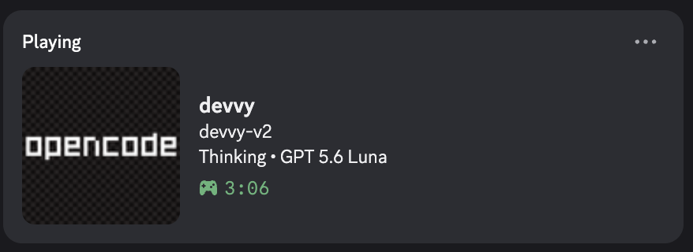

Devvy: Multi-Environment Discord Presence & Local IPC Daemon
Modern software engineering blends traditional text editors with autonomous agentic tools. When running VS Code, OpenCode, and Command Code side by side, having multiple uncoordinated integrations compete for Discord’s local presence pipe causes status flip-flopping and inconsistent activity states. I engineered Devvy around three core design motivations: avoiding unnecessary dependency overhead, preventing multiple local integrations from competing for presence state, and deliberately limiting exposed context. Devvy operates as a zero-dependency background daemon that speaks Discord’s binary IPC protocol directly over Unix domain sockets and Windows named pipes, arbitrating active developer environments with deterministic priority rules.
Live Presence Output
Discord Rich Presence (V4 Activity)
Real Discord V4 presence: Project name, high-level activity mode (Thinking), and detected model (GPT 5.6) with deliberate context limitation (no file paths or raw prompts).
1. Design Motivations & Problem Space
Displaying editor status in Discord should be a straightforward background utility. However, running multiple developer tools simultaneously (such as a GUI editor alongside terminal coding agents) creates clear architectural trade-offs that shaped Devvy’s design:
- Preventing Multiple Local Integrations from Competing for Presence State: When developers run VS Code alongside autonomous agents like OpenCode or Command Code, having separate tools connect independently to Discord’s local pipe leads to presence fighting and rapid status changes. Devvy introduces a centralized local daemon that arbitrates priority so only the most relevant active context updates Discord.
- Avoiding Unnecessary Dependency Overhead: Establishing a local Unix domain socket connection and sending periodic JSON payloads does not require large third-party client libraries, native compiled binaries, or dozens of transitive dependencies. Devvy implements the protocol directly using Node.js built-in modules (
node:net,node:buffer) with zero external runtime dependencies. - Deliberately Limiting Exposed Context: Detailed file paths, full repository branches, or sensitive agent prompts should never be broadcast over a public presence payload. Devvy intentionally restricts presence to high-level metadata: project name, coarse activity mode (
Thinking,Editing), and normalized model family names.
By decoupling editor telemetry from the Discord connection, Devvy centralizes multi-editor workflows into a single predictable, lightweight service.
2. Architecture & Control Topology
Rather than having IDE plugins talk to Discord directly, Devvy introduces a local hub-and-spoke model. Integrations publish lightweight, structured state updates over a loopback HTTP interface, while the daemon alone arbitrates active work and owns the single connection to Discord:
┌───────────────────────┐
│ VS Code │──┐
│ (extension.js) │ │
└───────────────────────┘ │
│
┌───────────────────────┐ │ PUT /state (127.0.0.1:17377)
│ OpenCode │──┼────────────────────────────────┐
│ (discord-presence.ts) │ │ Safe structured JSON payloads │
└───────────────────────┘ │ (Project, High-Level State, │
│ Sanitized Model, Heartbeat) │
┌───────────────────────┐ │ │
│ Command Code │──┘ │
│ (discord-presence.ts) │ │
└───────────────────────┘ │
▼
┌────────────────────────────────────────────────────────────────────────┐
│ Local Devvy Daemon │
│ │
│ ┌───────────────────────┐ ┌───────────────────────────────────────┐ │
│ │ Loopback HTTP API │ │ Priority Arbitration │ │
│ │ • 127.0.0.1:17377 │ │ • Precedence: OpenCode > Command Code│ │
│ │ • Healthcheck /health│ │ > VS Code │ │
│ │ • Max payload 64 KB │ │ • Intra-kind: Active > Inactive │ │
│ │ • EADDRINUSE exit 0 │ │ • Window focus & transition recency │ │
│ └──────────┬────────────┘ └───────────────────┬───────────────────┘ │
│ │ │ │
│ ▼ ▼ │
│ ┌──────────────────────────────────────────────────────────────────┐ │
│ │ Anti-Churn Flush Engine │ │
│ │ • Critical Anti-Flip-Flop Rule: heartbeats preserve TTL only │ │
│ │ • 2,000ms minimum IPC rate-limit gate (MIN_IPC_INTERVAL_MS) │ │
│ │ • Source expiry sweeper: 15s TTL sweeps stale crashed tools │ │
│ └──────────────────────────────────┬───────────────────────────────┘ │
│ │
│ ▼
│ ┌──────────────────────────────────────────────────────────────────┐ │
│ │ Direct Discord IPC Engine │ │
│ │ • Custom 8-byte binary opcode framing (readUInt32LE/writeUInt32)│ │
│ │ • Handshake negotiation (OP 0) & V4 Activity dispatch (OP 1) │ │
│ │ • Exponential backoff reconnects (1,000ms → 30,000ms) │ │
│ └──────────────────────────────────┬───────────────────────────────┘ │
└─────────────────────────────────────┼──────────────────────────────────┘
│ Unix Domain Socket: /tmp/discord-ipc-0...9
│ Windows Named Pipe: \\?\pipe\discord-ipc-0...9
▼
┌────────────────────────────────────────────────────────────────────────┐
│ Discord Client (Desktop) │
│ • Single stable Rich Presence activity broadcast to friends & servers │
└────────────────────────────────────────────────────────────────────────┘3. Direct Discord IPC: Binary Opcode Framing from Scratch
Instead of bundling third-party RPC libraries, Devvy implements Discord’s local IPC protocol directly using Node’s built-in node:net and node:buffer modules. Discord exposes local IPC on desktop operating systems via Unix domain sockets (discord-ipc-0 through discord-ipc-9 in /tmp or XDG_RUNTIME_DIR) or Windows named pipes.
Communication requires strict binary framing. Every packet sent and received over the socket begins with an 8-byte header:
Followed immediately by Length bytes of UTF-8 JSON payload.
The daemon implements the complete lifecycle protocol:
OP 0 (HANDSHAKE):Sent immediately upon socket connection with{ v: 1, client_id }.OP 1 (FRAME):Dispatches commands such asSET_ACTIVITYand parses Discord events (READY).OP 2 (CLOSE):Gracefully terminates sessions when Discord exits.OP 3 / 4 (PING / PONG):Emits responsive heartbeat replies.Stream Chunk Accumulation:Accumulates incoming network chunks into an internal buffer, reads complete packets viareadUInt32LE, and handles partial frames cleanly.Exponential Backoff Reconnect:If Discord closes or restarts, reconnect attempts back off progressively from 1,000ms up to 30,000ms to eliminate CPU spin.
4. Multi-Source Priority & The Anti-Flip-Flop Rule
When multiple developer environments run concurrently, which one should Discord display? Devvy solves this through a two-stage deterministic arbitration engine:
Cross-Kind Precedence
Coding tools have different semantic weight. An autonomous agent actively planning or modifying a codebase takes precedence over a background editor window:
If an OpenCode agent is thinking, its status is displayed. When the agent goes idle, presence falls back gracefully to the active VS Code workspace.
Intra-Kind Arbitration
When multiple windows of the same tool are open, compareWithinKind resolves the winner:
- Active source always beats inactive source.
- Focused window always beats unfocused window.
- Most recent focus event (
lastFocusedAt) breaks ties.
The Critical Anti-Flip-Flop Rule
In distributed presence systems, tools send periodic heartbeats (e.g. every 5 seconds) to indicate they are still alive. In a naive system, each incoming heartbeat updates a “last updated” timestamp. If two windows are active, their presence would flip-flop back and forth every few seconds as heartbeats arrived out of phase.
Devvy eliminates flip-flop through an explicit invariant in sourceKey(): heartbeat arrival (lastSeen) resets the TTL expiration timer, but is strictly excluded from arbitration keys. Recency is determined exclusively by genuine activity transitions (busyAt or lastActiveAt). Heartbeats never trigger Discord IPC updates.
5. Daemon Lifecycle, Source TTL & Service Management
Devvy runs as an unattended background service designed to handle crashes, reboots, and sleep cycles cleanly:
- 15-Second TTL Expiration: The daemon sweeps registered sources every 2,000ms. If an editor crashes or is force-quit without sending an exit payload, its state expires after 15 seconds (
TTL_MS) and the daemon clears or reverts the presence automatically. - Graceful Port Collision Handling: If another Devvy instance is already running on port 17377, the new process catches
EADDRINUSEand exits cleanly with status 0, preventing process churn or duplicate daemons. - Throttled Flush Timer (2-Second Minimum Interval): To avoid flooding Discord’s socket with high-frequency editor events, Devvy gates all outgoing IPC frames behind a
MIN_IPC_INTERVAL_MS = 2000timer, coalescing rapid bursts of typing or tool switching into smooth, throttled updates. - Zero-Configuration Service Supervision: On macOS, Devvy installs as a user LaunchAgent (
com.sonawaneutkarsh.devvy.plist) running against an isolated Node runtime. On Windows, it installs via PowerShell with startup registry registration.
6. Privacy Boundaries & Model Display Sanitization
Developers work on proprietary codebases, confidential research, and commercial APIs. Devvy enforces rigid privacy gates before constructing any Discord presence:
| Presence Domain | Deliberately Permitted Context | Strictly Redacted / Forbidden Scope |
|---|---|---|
| Project Identity | Workspace folder basename only (e.g. “Talks”) | Absolute paths, user home directory names, full Git URIs. |
| Activity Mode | Standardized modes: Thinking, Editing, Planning, Reviewing, Searching | Raw prompts, tool inputs, command-line arguments, terminal text. |
| Model Representation | Normalized family strings (e.g. “GPT 5.6”, “Claude 3.7”) | API endpoints, deployment UUIDs, fine-tuning flags, token counts. |
| Source Code | Primary language tag (e.g. “TypeScript”) | File names, code snippets, git commit messages, branch names. |
The normalization layer (model-display.mjs) maps raw internal identifiers to clean, public-safe labels while completely filtering out sensitive infrastructure details.
7. Verification & Automated Test Suite
Devvy is validated by a 22-scenario automated test suite executing against both mock Discord IPC endpoints and physical loopback sockets:
8. Source Code & Open Source
Devvy is open source under the MIT License. The repository contains the daemon, protocol engine, macOS and Windows installer scripts, and integration plugins for OpenCode, Command Code, and VS Code.